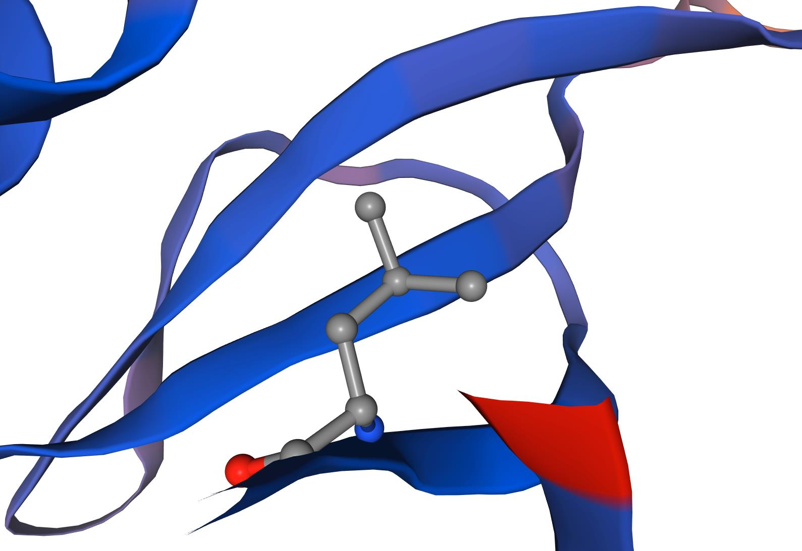
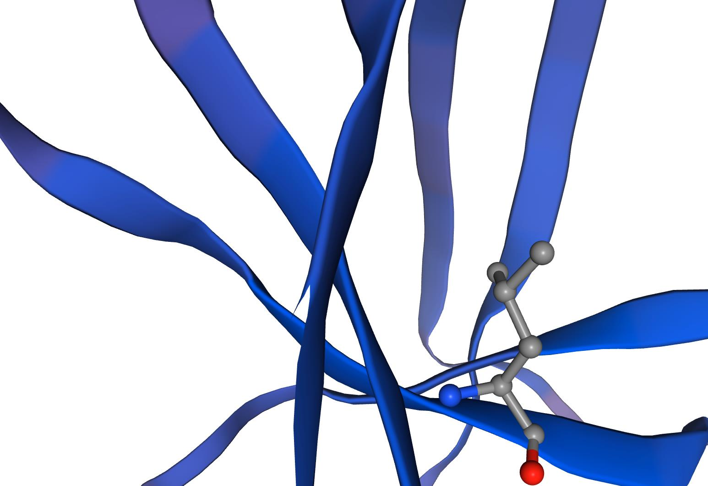

- Team
- Project
- Lab
- Model
- Parts
- Improvement
- Contributions
- Judging

In the project, xylanase is produced by Enemy and secreted outside the cell. Then xylan is hydrolyzed to produce arabinose. In Player, arabinose can change the conformation of AraC and dimer Ara-AraC can bind to PBAD, activating the transcription of downstream genes.
From the results, we can see that RelE works much later than we expected. And the attacking effect of Player was more obvious than that of Enemy. In iGAME, players can control when to turn on the light, how long the light lasts and set the light intensity. In these cases, all we need to do is to change the value of parameters and give an initial value to bacteria concentration, then the relationship between Enemy and Player can be obtained immediately with these equations.
In the practical implementation of our plan, how to monitor and evaluate the situation of Enemy and Player still remains a problem. In our second model, K-Nearest Neighbor algorithm is adopted to simulate the distribution of the number of colonies on the plate and present it in the form of binary picture to quickly evaluate our game results. If at last Player’s territory is greater than that of Enemy, you win.
In the field of pattern recognition, the KNN algorithm is a non-parametric statistical method for classification and regression. The classification of an object is determined by the principle "majority vote" of its neighbors, the class of the kth nearest neighbor determines the class to the subject. If k=1, then the category of the object is directly assigned by the nearest node. For example, in the following simple figure, we can see that if the value of k is 2, the green point to be measured will be given red, because the red neighboring points will first reach 2 as the radius increases; and if k is 3, the point to be measured will be given blue.